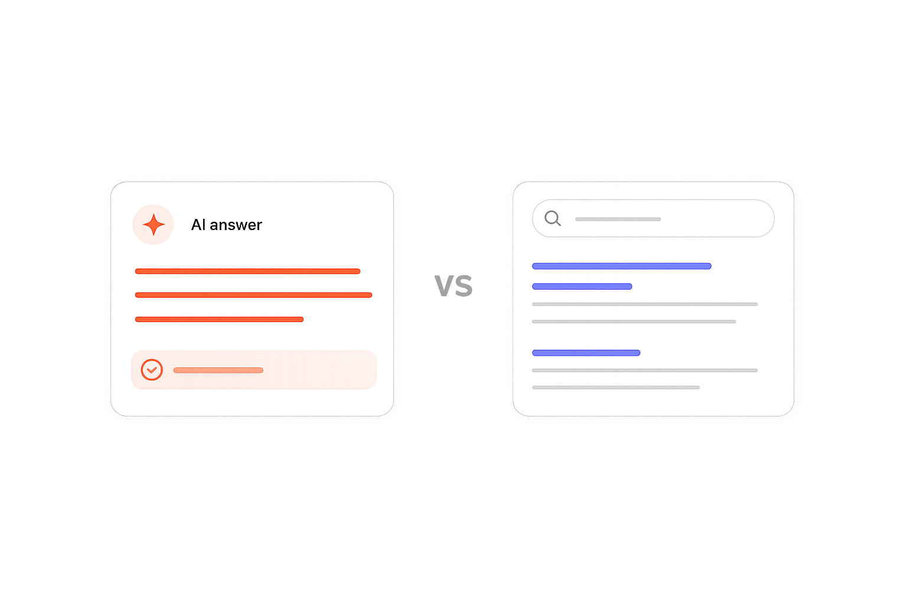
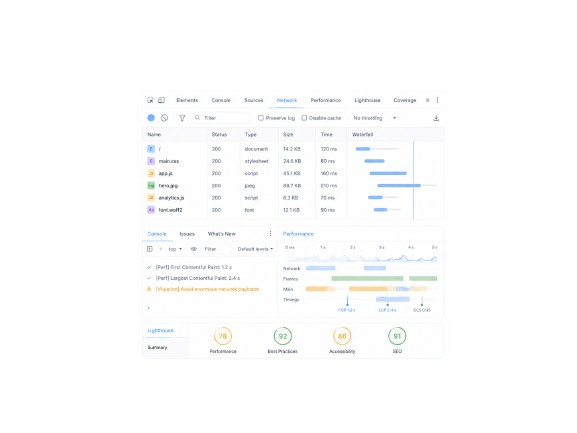

Practical takes on SEO, AI search, and how organic strategy is changing.

AEO vs. SEO: Optimizing for the next era of search
How answer engines are reshaping discovery — and a practical playbook for staying visible as AI does more of the searching, answering, and decision-supporting.
Read article
Using Chrome DevTools to find & fix site speed issues
A walkthrough of Lighthouse, Performance, Network, Coverage, and Console — with real-world examples for fixing each Core Web Vital.
Read articleMore articles on technical SEO, content strategy, and AI search are on the way.